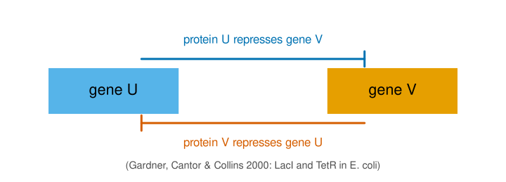
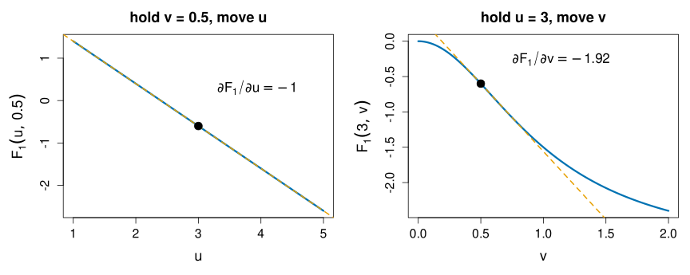
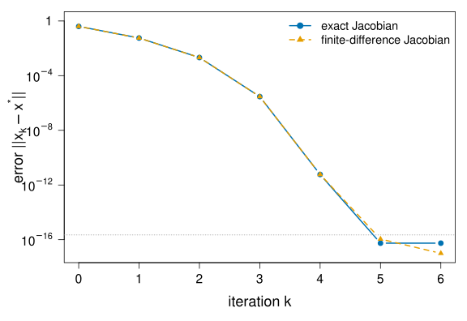
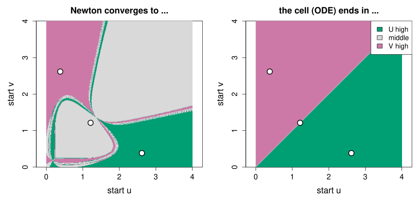
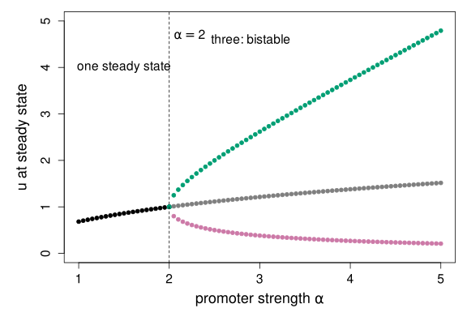

So far we solved one equation in one unknown. Biology rarely stops there: two genes regulate each other, so their steady state is two equations in two unknowns, solved together.
Partial derivatives: the slope in one direction while the other variables are held fixed. New for most of you; we go slowly, with numbers.
The Jacobian: all partial derivatives in one matrix. It plays the role of f'(x).
Newton for systems: linearise, then do one linear solve per step, solve(J, -F). Still quadratic convergence.
A finite-difference Jacobian when you cannot (or do not want to) differentiate by hand, and the library routine rootSolve::multiroot.
Biology: the genetic toggle switch. It has three steady states (bistability), and which one Newton finds depends on where it starts.
A biology problem: the toggle switch

Two genes whose proteins repress each other (Gardner, Cantor & Collins, Nature 2000). Concentrations u, v (in units of the repression threshold), time in units of the protein lifetime:
Example from Newton and secant methods: f(x) = x^2 - 2, x_0 = 1:
k
x_k
f(x_k)
f'(x_k)
correct digits
0
1
-1
2
0
1
1.5
0.25
3
1
2
1.41667
0.00694
2.833
2
3
1.4142157
6.0\times10^{-6}
2.828
5
To do the same for \mathbf F(u, v) we need the “derivative” of a function of two variables that returns two numbers.
Partial derivatives: hold the others fixed
F_1(u, v) = \dfrac{3}{1+v^2} - u depends on two numbers. Ask one question at a time:
How fast does F_1 change when only u moves? Treat v as a constant and differentiate in u as usual: \frac{\partial F_1}{\partial u} = -1
How fast does F_1 change when only v moves? Treat u as a constant (it drops out) and use the chain rule on 3(1+v^2)^{-1}: \frac{\partial F_1}{\partial v} = -\frac{3 \cdot 2v}{(1+v^2)^2} = -\frac{6v}{(1+v^2)^2}
At the point (u, v) = (3, 0.5): \dfrac{\partial F_1}{\partial v} = -\dfrac{6 \cdot 0.5}{1.25^2} = -\dfrac{3}{1.5625} = -1.92.
The curly \partial (“partial”) just means: other variables held fixed.
Partial derivatives are slopes of slices

f1 <-function(u, v) alpha / (1+ v^2) - uh <-1e-6(f1(3+ h, 0.5) -f1(3, 0.5)) / h # move u only# [1] -1(f1(3, 0.5+ h) -f1(3, 0.5)) / h # move v only# [1] -1.92
The Jacobian: all partial derivatives in one matrix
In matrix form: \mathbf F(\mathbf x + \boldsymbol\delta) \approx \mathbf F(\mathbf x) + J\,\boldsymbol\delta (matrix J times vector \boldsymbol\delta).
x <-c(3, 0.5); d <-c(-0.1, 0.05)F(x + d) # the true value# [1] -0.5967370 -0.2311902F(x) +J(x) %*% d # the linear prediction# [,1]# [1,] -0.596# [2,] -0.232
The Newton step: one linear solve
Ask for \mathbf F(\mathbf x_k + \boldsymbol\delta) = \mathbf 0 in the linear approximation:
newton_sys <-function(F, J, x, tol =1e-12, maxit =50) {for (k in1:maxit) { delta <-solve(J(x), -F(x)) # one linear solve per step x <- x + deltaif (sqrt(sum(delta^2)) < tol) return(x) }warning("no convergence") x}print(newton_sys(F, J, c(3, 0.5)), digits =16)# [1] 2.618033988749895 0.381966011250105
sqrt(sum(delta^2)) is the length of the step vector, \|\boldsymbol\delta\|. Stop when the step is tiny; also check the residual \|\mathbf F\|.
Exact root (exercise): \big((3+\sqrt5)/2,\ (3-\sqrt5)/2\big). All 16 digits agree.
Still quadratic

Error \|\mathbf x_k - \mathbf x^*\| from (3, 0.5):
k
error
0
4.0\times10^{-1}
1
5.7\times10^{-2}
2
2.1\times10^{-3}
3
2.9\times10^{-6}
4
5.8\times10^{-12}
5
< 10^{-16}
The exponent roughly doubles each step, as in 1-D: e_{k+1} \approx C\,e_k^2.
A dropping curve on a log axis that gets steeper = quadratic.
Three steady states: which one do we get?
starts <-rbind(c(3, 0.5), c(0.5, 3), c(1, 1), c(1, 0.2), c(4, 4))t(apply(starts, 1, function(s) newton_sys(F, J, s))) # (printing switched off)# [,1] [,2]# [1,] 2.618034 0.381966 U on, V off# [2,] 0.381966 2.618034 V on, U off# [3,] 1.213412 1.213412 middle# [4,] 0.381966 2.618034 V on: although U > V at the start!# [5,] 1.213412 1.213412 middle
Bistable: two “decided” states, plus the middle one. Newton finds one root per start.
To find them all: run from many starts and collect the distinct answers.
The start (1, 0.2) has more U than V, yet Newton lands on “V on”. Newton’s choice is not the cell’s choice.
Where Newton goes vs where the cell goes

Left: colour = the steady state Newton converges to from that start. Right: where the ODE (the cell) ends up.
Newton’s regions (basins) are curved, with thin bands of all colours; the middle, unstable state takes 57 % of this square.
Bistability needs a strong promoter

Run Newton from a 7 × 7 grid of starts for each promoter strength \alpha, keep the distinct roots.
\alpha < 2: one steady state; the circuit is not a switch.
\alpha > 2: three; the circuit is bistable.
Designing the switch (Gardner et al.) meant tuning promoters until the circuit was in the bistable range.
No formula for J? Finite differences
Often \mathbf F is a long function (a 20-gene network, a model with many terms) and deriving J by hand is tedious and error-prone. Approximate column j by nudging only x_j:
Use it also to check a hand-derived J: a wrong entry shows up as an error much larger than 10^{-7}.
The cost of a step: one linear solve
Per Newton step for n genes:
part
cost
evaluate \mathbf F
depends on the model, often \sim n
Jacobian by finite differences
n + 1 evaluations of \mathbf F
solve J\boldsymbol\delta = -\mathbf F (Gaussian elimination)
\approx \tfrac23 n^3 operations
n = 2: nothing. n = 1000: \approx 7\times10^8 per step, still under a second. n = 20\,000: hours, unless J is sparse (most genes do not regulate most others).
Never form solve(J) (the inverse) and multiply: solve(J, -F) is cheaper and more accurate.
multiroot is Newton–Raphson with a finite-difference Jacobian (unless you pass jacfunc), plus tolerances (rtol, atol, ctol), an iteration limit and sparse-Jacobian options for large models.
It stops at its own tolerance: here \|\mathbf F\| \approx 10^{-12}, not 10^{-16}. Checkf.root, and set atol tighter if you need it.
It finds one root, from your start. Multiple starts are still your job.
Failure 1: a nearly singular Jacobian
x0 <-c(1.9, 0.5)det(J(x0)) # close to 0# [1] -0.02992175x0 +solve(J(x0), -F(x0)) # the first step# [1] -5.136430 4.425224 # negative concentration!newton_sys(F, J, c(1.9, 0.5)) # ends in the middle statenewton_sys(F, J, c(2.0, 0.55)) # a nearby start: "U on"
\det J \approx 0: the linear model is nearly flat in some direction, so the step is huge. It lands at u < 0, which is not a concentration.
With a non-integer Hill coefficient (n = 2.5) the same kind of jump gives (-3.2)^{2.5} = NaN, and Newton returns NaN.
Check: watch \|\boldsymbol\delta\| and \det J (or the condition number); check all(is.finite(x)) and all(x >= 0).
Failure 2: a root, but not the one you wanted
Newton from (1, 1), (2, 2) or (4, 4) converges, quickly and correctly, to the middle state (1.2134, 1.2134): a start with u = v stays on the diagonal by symmetry.
The residual is 10^{-16}: nothing in the output warns you that this state is unstable, i.e. that no real cell sits there.
A single run hides the other two states completely: you would conclude the switch is not bistable.
Checks
Run from many starts (a grid, or random) and list the distinct roots.
Check each root for stability: eigenvalues of J at the root (Equilibria, stability and the phase plane), or a short ODE simulation from a nearby point.
Checklist for Newton on a system
Check J against a finite-difference Jacobian before anything else (difference \sim 10^{-8}, not \sim 1).
Watch the iteration:\|\mathbf F(\mathbf x_k)\| should fall fast (digits double). If it grows or stalls, the start is too far or J is wrong.
Look at the root: finite, non-negative, residual small (f.root in multiroot).
Large steps / tiny \det J → the start is near a singular Jacobian; try another start or a damped/trust-region solver.
Many starts → collect distinct roots; one run finds one root.
Stability is a separate question: a root of \mathbf F is not necessarily where the cell goes.
Summary
A partial derivative\partial F_i/\partial x_j is an ordinary derivative with all other variables held fixed. The JacobianJ collects them: row = equation, column = variable.
Linearise: \mathbf F(\mathbf x + \boldsymbol\delta) \approx \mathbf F(\mathbf x) + J\boldsymbol\delta. Newton step: solve J\boldsymbol\delta = -\mathbf F, set \mathbf x \leftarrow \mathbf x + \boldsymbol\delta. One linear solve per step: solve(J(x), -F(x)).
Convergence is quadratic near a root, as in one variable.
Finite-difference Jacobian: one column per nudge, h = \sqrt\varepsilon\max(|x_j|, 1), about 8 correct digits, n + 1 evaluations of \mathbf F.
The toggle switch has three steady states when \alpha > 2 (bistable). Which one Newton finds depends on the start, in complicated ways, and it finds unstable states as happily as stable ones.
Failures: nearly singular J (huge steps, negative concentrations, NaN), and converging to a root you did not want. Checks: step size, positivity, many starts.
Next: Part 3, Gaussian elimination as LU: what solve does inside, and what it costs.